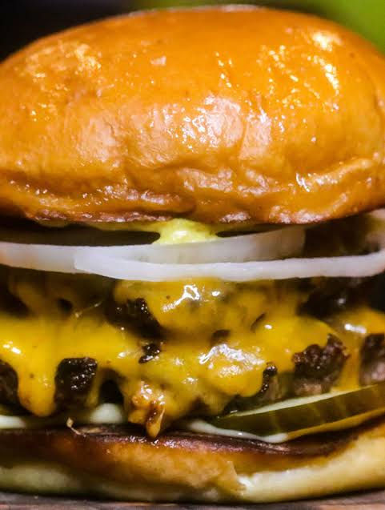

Homemade Burger with Cheese
Ingredients
- 1 Plastic Bottle (1.5 L)
- 1.5 kg of Ground Beef
- 2 Eggs
- 2 Teaspoons of Salt
- 1 Pinch of Black Pepper
- 1 Teaspoon of Garlic Powder
- Parsley to Taste
- 1 Onion
- 50 g of Breadcrumbs
- 100 ml of Coca‑Cola
- 150 g of Diced Mozzarella Cheese
- 1 Drizzle of Olive Oil
Modo de Fazer (How to Make)
Start by cutting off the top of the plastic bottle. In a large bowl, add the ground beef and the eggs. Season with the salt, a pinch of black pepper, the garlic powder, parsley to taste and the onion chopped into small cubes. Add the breadcrumbs, the Coca‑Cola and mix all the ingredients together very well until combined. Next, take a handful of this meat mixture and place it in the bottle we cut earlier, pressing it firmly at the bottom. Add one cube of mozzarella cheese to the center of this meat and repeat this process until you have used all the meat. Cover the bottle with plastic wrap, place it in the freezer and let it chill for at least 3 hours. After this time has passed, cut the bottle with a pair of scissors. Remove the meat from inside the bottle and cut it into slices that are neither too thick nor too thin, forming burgers. In a large skillet over medium to low heat, add a drizzle of olive oil. Add the burgers we prepared earlier and fry them until golden brown. Serve.